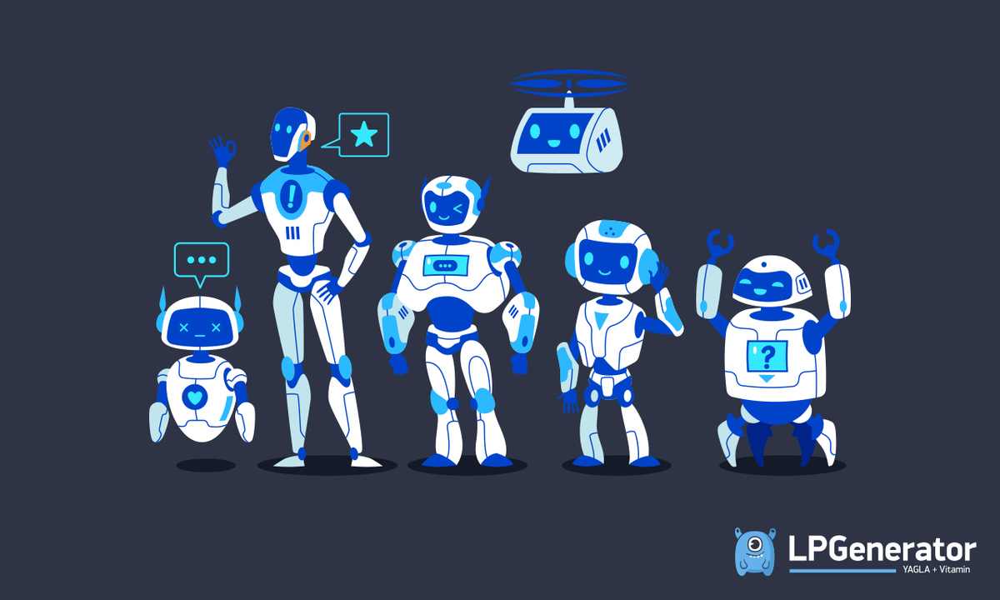

Робототе́хника — прикладная наука, занимающаяся разработкой автоматизированных технических систем и являющаяся важнейшей технической основой развития производства.
Робототехника опирается на такие дисциплины, как электроника, механика, кибернетика, телемеханика, мехатроника, информатика, а также радиотехника и электротехника. Выделяют строительную, промышленную, бытовую, медицинскую, авиационную и экстремальную робототехнику.
Некоторые идеи, положенные позднее в основу робототехники, появились ещё в античную эпоху — задолго до введения перечисленных выше терминов. Найдены остатки движущихся статуй, изготовленных в I веке до нашей эры. В «Илиаде» Гомера говорится, что бог Гефест сделал из золота говорящих служанок, придав им разум (то есть — на современном языке — искусственный интеллект) и силу. Древнегреческому механику и инженеру Архиту Тарентскому приписывают создание механического голубя, способного летать (ок. 400 г. до н. э.). Более двух тысяч лет назад Герон Александрийский создал водяной автомат «Поющая птица» и ряд систем подвижных фигур для античных храмов. В 270 году древнегреческий изобретатель Ктесибий изобрёл особые водяные часы, получившие название клепсидра (или «крадущие время»), которые своим хитроумным устройством вызвали значительный интерес современников. В 1500 году великий Леонардо да Винчи разработал механический аппарат в виде льва, который должен был открывать герб Франции при въезде короля в город. В XVIII веке швейцарским часовщиком П. Жаке-Дрозом была создана механическая кукла «Писец», которая могла быть запрограммирована с помощью кулачковых барабанов на написание текстовых сообщений, содержащих до 40 букв[8]. В 1801 году французский коммерсант Жозеф Жаккар представил передовую по тем временам конструкцию ткацкого станка, который можно было «программировать» с помощью специальных карт с отверстиями для воспроизведения на вытканных полотнах повторяющихся декоративных узоров. В начале XIX века эта идея была позаимствована английским математиком Чарлзом Бэббиджем для создания одной из первых автоматических вычислительных машин. Примерно к 30-м годам XX века появились андроиды, реализующие элементарные движения и способные произносить по команде человека простейшие фразы. Одной из первых таких разработок стала конструкция американского инженера Д. Уэксли, созданная для Всемирной выставки в Нью-Йорке в 1927 году.
В 50-х годах XX века появились механические манипуляторы для работы с радиоактивными материалами. Они были способны копировать движения рук оператора, который находился в безопасном месте. К 1960-му году были проведены разработки дистанционно управляемых колёсных платформ с манипулятором, телекамерой и микрофоном для обследования и сбора проб в зонах повышенной радиоактивности.
Широкое внедрение промышленных станков с числовым программным управлением стало стимулом для создания программируемых манипуляторов, используемых для погрузки и разгрузки станочных систем. В 1954 году американским инженером Д. Деволом был запатентован метод управления погрузочно-разгрузочным манипулятором с помощью сменных перфокарт, как следствие в 1956 году совместно с Д. Энгельбергером им была создана первая в мире промышленная компания по производству промышленной робототехники. В 1962 году вышли в свет первые в США промышленные роботы «Версатран» и «Юнимейт», причём некоторые из них функционируют до сих пор, преодолев порог в 100 тысяч часов рабочего ресурса. Если в этих ранних системах соотношение затрат на электронику и механику составляло 75 % к 25 %, то в настоящее время оно изменилось на противоположное. При этом, конечная стоимость электроники продолжает неуклонно снижаться. Появление в 1970-х годах недорогих микропроцессорных систем управления, которые заменили специализированные блоки управления роботов на программируемые контроллеры способствовало снижению стоимости роботов примерно в три раза. Это послужило стимулом для их массового распространения по всем отраслям промышленного производства.
Множество подобных сведений содержится в книге «Робототехника: История и перспективы» И. М. Макарова и Ю. И. Топчеева, представляющей собой популярный и обстоятельный рассказ о роли, которую сыграли (и ещё сыграют) роботы в истории развития цивилизации.
обучаещее видео: